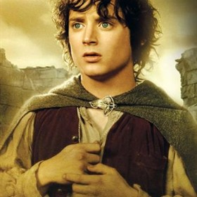

Frodo Baggins is the youngest generation of Baggins' that has lived under the hill in Hobbiton which is in the Shire. Frodo's closest family member is his Uncle Bilbo Baggins, who is famously known for his adventures, fighting dragons, enchanting stories, and his wealth. Frodo's closest friends from the Shire are Samwise Gamgee, Merry Brandybuck, and Peregrin 'Pippin' Took. When living in the Shire, Frodo would love to smoke pipe-weed, read, dance, drink the local ale, and help his aging Uncle around the house. When dear friend, Gandalf the Gray approaches Frodo with a task to destroy an evil that is spreading in Mordor, Middle Earth, Frodo and friends join a fellowship starting in Rivendell whose quest is to destroy the ring of power. After embarking on their year long journey to destroy the ring created by Sauron, Frodo decides his life will never return to the way that is was beforem is encounter with the Witch King at Weathertop, and sails to the Western seas with Gandalf and the remaining elves...
© 2013 Marissa Ho